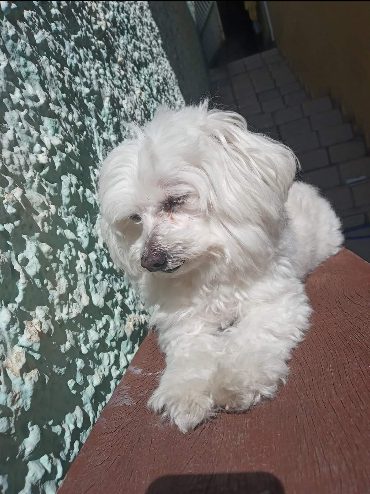
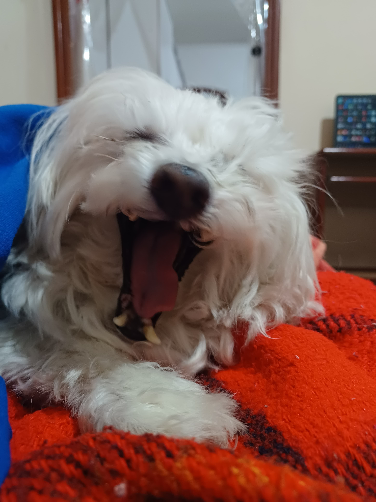

Nina Tisciane
Nina após soneca
Nina depois de tirar um belo cochilo da tarde.
Fazendo pose
Nina tomando um solzinho no quintal da minha casa.

Dormindo no sol
Nina tomando um solzinho na área de serviço da minha casa.

Pegando bronzeado banco
Nina tomando um solzinho deitada no banco, no quintal da minha casa.
Narigão
Nina com o narigão próximo da câmera durante uma selfie.
Mostrando a língua
Nina com calor enquanto é tosada no quintal da minha casa.

Bocejando
Nina abrindo o bocão após dar um ótimo cochilo na sala de estar da minha casa.
Perdendo a paciência
Nina se irritando com o fotográfo (vulgo eu) kkkkkkk.
Minha mãe viu a Nina pela primeira vez em um anúncio no site OLX em 2014. Quando minha mãe ligou para marcar uma visita na casa da antiga dona, ela foi informada de que uma outra pessoa
já havia marcado horário, ou seja, só teríamos chance se essa pessoa desistisse da compra. Eu fiquei super chateado, pensei que não iria conseguir conhecer ela e comecei a chorar. Após algum tempo, a moça retornou a ligação
dizendo que a outra pessoa havia desistido, então marcamos o horário e fomos visitá-la. Chegando no local, a Nina dividia casa com uma tartaruga enorme (ou era um jabuti?), além de outro cachorro, um lago com carpas, gaiolas com hamsters e calopsitas.
A coiotada da Nina estava repleta de pulgas... uma judiação. Decidimos ficar com ela, e me lembro que a primeira coisa que minha mãe fez foi dar um banho na querida, libertando ela das pulgas.
Sim, a Nina é banguela! Ela possuia muito tártaro nos dentes, sendo necessário retirar quase todos, sobrando apenas as presas.
Como isso impacta a vida dela?
Bom, ela consegue comer normalmente (claro que alimentos não tão duros), a maior diferença é que ela acaba ficando com a língua de fora mais facilmente, principalmente quando está dormindo.
Como isso impacta a vida dela?
Bom, ela consegue comer normalmente (claro que alimentos não tão duros), a maior diferença é que ela acaba ficando com a língua de fora mais facilmente, principalmente quando está dormindo.
De acordo com a antiga dona, a Nina nasceu em 2012, completando 12 anos em 2024.
Feito por João Vitor Martinelle